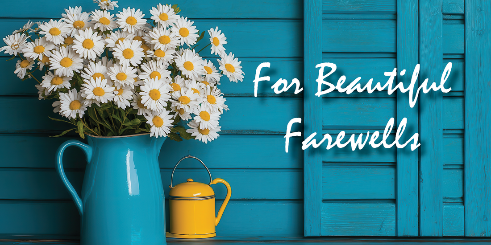

Someone has passed away. What do I do now?
Call us first. Phone 0800 2 FAREWELL (0800 232 7393) or 03 313 8222 and we will talk you through what happens next, one step at a time.
Local funeral homes, Canterbury wideKaikouraNorth CanterburyChristchurchSelwyn
A meaningful funeral is a personalised funeral, one that is a tribute to the life that was lived.
Call 0800 232 7393 or 03 313 8222

You are unique and so is your life, so why settle for the same service as everyone else?
At Gulliver & Tyler Funerals we believe a meaningful funeral is a personalised funeral, one that is a tribute to the life that was lived. Every person, every family and every story is different, and the farewell should be too.
We pride ourselves on providing a service that celebrates life across an array of venues and settings that reflects the uniqueness of the person who is being celebrated. Whether you are in Christchurch, North Canterbury, Kaikoura or Selwyn, there is a local funeral home close by.
Member of the Funeral Directors Association of NZWhen someone you love dies, it is hard to know where to begin. Here are the questions we are asked most often, with the first steps to take.
Call us first. Phone 0800 2 FAREWELL (0800 232 7393) or 03 313 8222 and we will talk you through what happens next, one step at a time.
We arrange both burial and cremation. We can talk through the options with you, so you can choose what feels right for your loved one and your family.
Choosing a casket or urn is part of arranging the farewell. We will show you the caskets and urns available and help you find one that suits the person you are remembering.
Time together matters. Ask us how time with your loved one can be arranged before the farewell, so family and friends can say goodbye in their own way.
A service that celebrates life can be held across an array of venues and settings. We will help you choose a venue that reflects the person being celebrated.
We will explain costs and payment clearly, and talk with you about funeral grants that may apply. Email reception@canterburyfunerals.co.nz or call us to ask.
Alongside arranging the farewell, we take care of the practical details so your family can focus on each other.
Respectful care of your loved one while they are with us, until the day of the farewell.
Your loved one dressed in the clothing you choose, so they look like themselves.
Bringing a loved one home, or taking them home, when a death happens away from where they belong.
Ask us about compassionate airfares for family who need to travel to the farewell.
We have our own hearse fleet to take your loved one on their final journey.
Talk to us about planning and paying for your own funeral ahead of time, so your wishes are known.
We are local funeral homes, Canterbury wide, serving families from Kaikoura in the north to Selwyn in the south.
Gulliver & Tyler Funerals
135 Youngs Rd, Rangiora
If someone has passed away, or you would like to talk about arranging a farewell, please get in touch. A member of our team will guide you through the next steps.